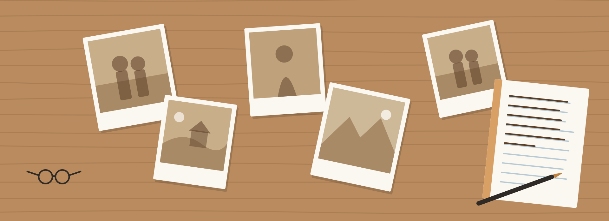

Before the Interview
Before We Meet사전 질문지
인터뷰 전에 작성하는 질문지입니다.
적어 주신 내용으로 인터뷰를 준비합니다.
Story Note
질문지에 적는 내용
떠오르는 만큼 편하게 적어 주세요.
-
부모님의 사소한 일상
즐겨 드시는 음식이나 자주 하시는 말씀처럼 작은 일상을 적어 주세요.
-
간직하고 싶은 이야기
가족이 오래 간직하고 싶은 부모님의 이야기를 적어 주세요.
-
자녀가 묻고 싶은 질문
부모님께 여쭙고 싶었던 질문을 적어 주세요. 인터뷰 때 여쭙니다.
-
옛 사진
책과 영상에 넣고 싶은 옛 사진을 올려 주세요. 종이 사진은 휴대폰으로 찍어 올리면 됩니다.
Story Form
Share Their Story사전 질문지 작성
입력한 내용과 사진은 작성한 본인과 관리자만 볼 수 있습니다.
사전 질문지를 불러오는 중입니다.